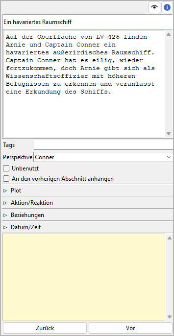
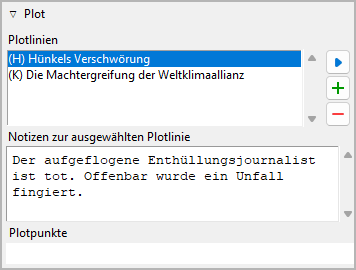
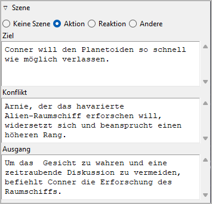
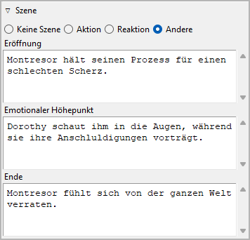
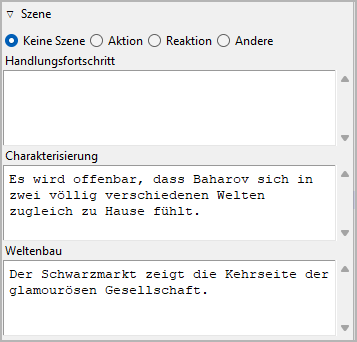
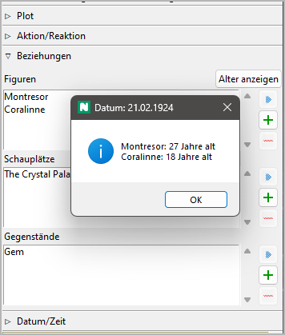
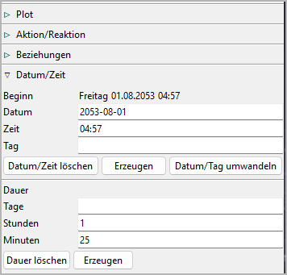
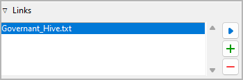
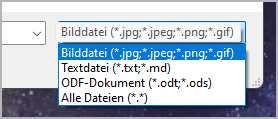

Abschnittseigenschaften
The Abschnitt properties view öffnet sich im rechten Fenster when you select a section in the tree.

Titel und Beschreibung
Titel und Beschreibung werden als beschreibbare „Karteikarte“ dargestellt.
Die Bearbeitung des Titels kann mit der Eingabetaste beendet werden. Änderungen an der Beschreibung werden übernommen, sobald mit der Maus irgendwo außerhalb des Texteingabefelds geklickt wird.
Perspektive
The viewpoint character’s short name is displayed in the Baumansicht. You can select it from a drop-down list containing all characters in the Baumansicht’s sort order.
Unbenutzt
Mit te Unbenutzt Auswahlfeld kann man change the section type.
An den vorherigen Abschnitt anhängen
When ticked, there will be no section divider inserted above the selected section in exported documents. The section just starts a new paragraph.
Plot
Dieses Fenster mit Klick auf den Titel öffnen oder schließen.

Plotlinien
Hier kann man assign the selected section to the Plotlinien it belongs to. The assigned Plotlinien are displayed in a list in the order they are assigned to the section.
Tipp
A more convenient way to manage and keep track of Plotlinie assignments is offered by the nv_matrix plugin.
You can also assign a section to a Plotlinie by entering text in the corresponding Plotlinie notes cell of the plot grid.
- Hinzufügen Plotlinie assignment
When clicking on
 , the „Pick mode“
is activated, and the cursor changes to a „plus“ shape. By clicking
on a Plotlinie, it will be related with the section.
, the „Pick mode“
is activated, and the cursor changes to a „plus“ shape. By clicking
on a Plotlinie, it will be related with the section.Hinweis
You can exit the „Pick mode“ without selecting an element by clicking on the highlighted status bar, or by pressing the
Esckey.- Plotlinie entfernen assignment
When clicking on
 or pressing the
or pressing the Entf-Taste, the selected Plotlinie is removed from the list.- Ansicht the related element
When double-clicking on a Plotlinie, or clicking on , the selected Plotlinie is opened and its properties are displayed.
Hinweis
You can go back to the initially selected section with
 .
.- Plotlinie notes
You can enter section-related notes for the Plotlinie selected in the list of related Plotlinien. These notes appear in the plot grid where you also can edit them.
Plotpunkte
The plot points assigned with the selected section are displayed along with their Plotlinien.
Hinweis
To change or clear the plot point assignment, go to the plot point’s properties.
Szene
Dieses Fenster mit Klick auf den Titel öffnen oder schließen.

There is a popular theory for „selling writers“ that suggests novels are best divided into scenes, alternating between „action scenes“ and „reaction scenes“, or „scenes“ and „sequels“. If you want to implement something like this to ensure suspense kann man do so here.
If this is not for you, but you would like to use a different method to set up a dramaturgical scene micro-structure kann man set the section to Andere and get three freely named text fields.

Example of a non-standard scene category
On the other hand, not every section is a scene to which the categories mentioned above appliy. Sections can be characterized by mode of discourse (e.g. Narration, Dramatic action, Dialogue, Description, Exposition). So if a section is not staged, you can set the section to Keine Szene, and get three freely named text fields.

Example of a non-staged section category
Beziehungen
Dieses Fenster mit Klick auf den Titel öffnen oder schließen.

If you want to associate characters, locations, and items with the section kann man do it here by adding the element to a list of relationships.
- Alter anzeigen
If a section is dated kann man call up the ages of the related characters who have birth dates.
- Hinzufügen Relationship
When clicking on
, the „Pick mode“
is activated, and the cursor changes to a „plus“ shape. By clicking
on a character/location/item, this element will be related with the
section.Hinweis
You can exit the „Pick mode“ without selecting an element by clicking on the highlighted status bar, or by pressing the
Esckey.- Entfernen Relationship
When clicking on
or pressing the Entf-Taste, the selected relationship is removed from the list.- Ansicht the related element
When double-clicking on a related element, or clicking on , the selected element is opened and its properties are displayed.
Hinweis
You can go back to the initially selected section with
.
Hinweis
A convenient way to manage and keep track of relationships is offered by the nv_matrix plugin.
Datum/Zeit
Hier kann man enter information about the selected section’s narrative time. Die Bearbeitung kann mit der Eingabetaste beendet werden.
Hinweis
Dedicated timeline software offers a more convenient way of entering date/time and duration information. So if chronology is important to your story, you might want to take a look at the Timeline plugin, or the Aeon Timeline 2 plugin.

Beginn
If the selected section is a scene, this is when it starts:
- Datum
Format: YYYY-MM-DD, according to ISO 8601.
- Zeit
Format: hh:mm, according to ISO 8601.
- Tag
Format: Any number. Tag „0“ is the reference date, if set.
Bemerkung
Alle entries are optional. You can either enter a date, or a day.
- Datum/Zeit löschen
This will reset Datum, Zeit, and Tag simultaneously.
- Erzeugen
This generates date and time from the date/time/duration data of the previous section, so the selected section follows directly the previous one.
- Datum/Tag umwandeln
If the reference date is set, The unspecific Tag can be transformed into a specific Datum, and vice versa.
Hinweis
If necessary kann man convert all sections at once in the Buch properties view.
Dauer
- Tage
Any number should be accepted.
- Stunden
If a number greater than 24 is entered, the number of days will be automatically increased.
- Minuten
If a number greater than 60 is entered, the number of hours will be automatically increased.
- Dauer löschen
This will reset Tage, Stunden, and Minuten simultaneously.
- Erzeugen
This generates the duration from the date/time data of the next section, so the next section follows directly the current one.
Links
Dieses Fenster mit Klick auf den Titel öffnen oder schließen.

Das ist eine Liste für Links zu Bildern und Recherche-Dokumenten.
Obwohl novelibre Daten zu Figuren, Schauplätzen und Gegenständen verwalten kann, ist es nicht die richtige Anwendung für umfangreichen Weltenbau. Dafür sollte man leistungsfähigere Softwareprogramme verwenden, zum Beispiel Zim Desktop Wiki. Dazu kann novelibre Hyperlinks zu den Textdateien erzeugen, welche Sie schnell zu den richtigen Stellen im Wiki führen.
Oder Sie haben einige Bilder gesammelt, die Sie beim Schreiben inspirieren. Dann erzeugen Sie einfach Links zu diesen Bildern und lassen Sie novelibre diese mit Ihrem System-Bildbetrachter öffnen.
Tipp
Wenn sie mehrere Bilder z.B. zu einer Figur in einem Ordner gesammelt haben, den Ihr Standard-Bildbetrachter durchsuchen kann, ist ein einziger Link auf eines dieser Bilder ausreichend.
Die Links werden in einer Liste angezeigt, und zwar in der Reihenfolge der Eingabe.
- Link hinzufügen
Wenn Sie auf
klicken, öffnet sich ein Dateiauswahldialog.
Die ausgewählte Datei wird der Linkliste hinzugefügt.Hinweis
Der Dialog zeigt zunächst nur Bilddateien. Für andere Dateitypen ändern Sie die Auswahl in der unteren rechten Ecke.

Windows 10 Explorer Screenshot
- Link entfernen
Wenn Sie auf
klicken oder die Entf-Taste drücken, wird der ausgewählte Link von der Liste entfernt.- Link öffnen
Wenn sie auf einen Link doppelklicken, oder auf klicken, Wird die Datei, auf die der Link verweist, mit der Standardanwendung für ihren Typ geöffnet.
Hinweis
Falls Sie bestimmte verlinkte Dateien mit einer anderen Anwendung als der System-Standardanwendung öffnen wollen, können Sie eine „Programmstarter“-Einstellung vornehmen. Dafür erzeugen Sie einfach eine Textdatei namens launchers.ini im Verzeichnis
.novx/config(wo alle Konfigurationsdateien liegen). Hier in können Sie Erweiterungen Anwendungsprogramme zuordnen.Zim Desktop-Wiki-Seiten sind ein Sonderfall. Dafür ordnen Sie die .zim-Erweiterung dem Zim-Programm zu.
Dieses Beispiel zeigt eine Einstellung, die novelibre Textdateien mit der Zim Desktop Wiki-anwendung öffnen lässt, statt mit dem Standard-Texteditor:
[SETTINGS] .zim = C:/Program Dateis (x86)/Zim Desktop Wiki/zim.exe

Windows 10 Explorer Screenshot
„Haftmerker“
Der gelbe Texteingabebereich ist für Notizen. Änderungen werden übernommen, wenn mit der Maus irgendwo außerhalb des Texteingabefelds geklickt wird.
Wenn der „Haftmerker“ einers Abschnitts Text enthält, erscheint in the Baumansicht ein „N“ als Merker.
Wenn ein Kapitelzweig mit Abschnitten, die notizen enthalten, eingeklappt wird, erscheint das „N“ in der Kapitelzeile.
Bemerkung
Die „Haftmerker“ sind nur für die Arbeit mit novelibre gedacht. Sie werden nicht beim Dokumentenexport berücksichtigt. Allerdings erscheinen sie in der Abschnittsliste.